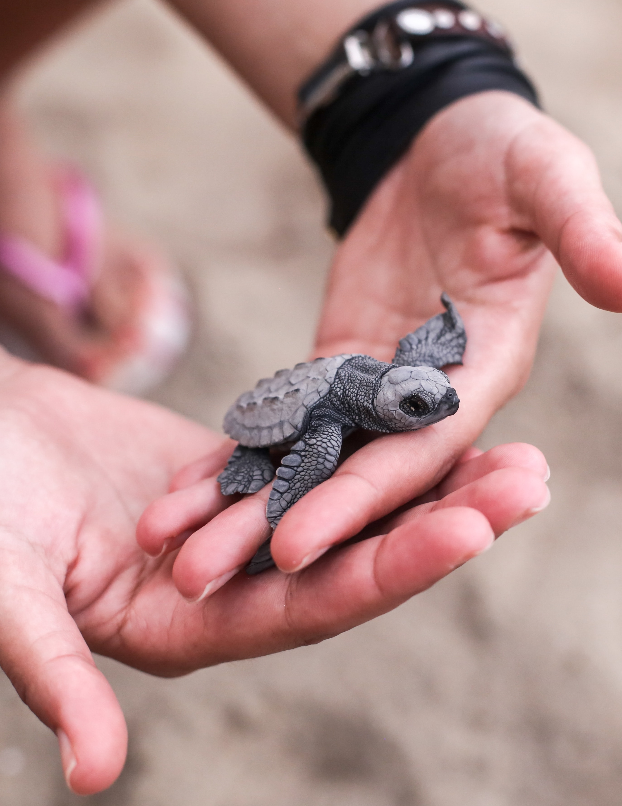
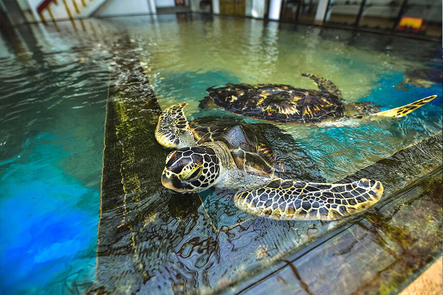
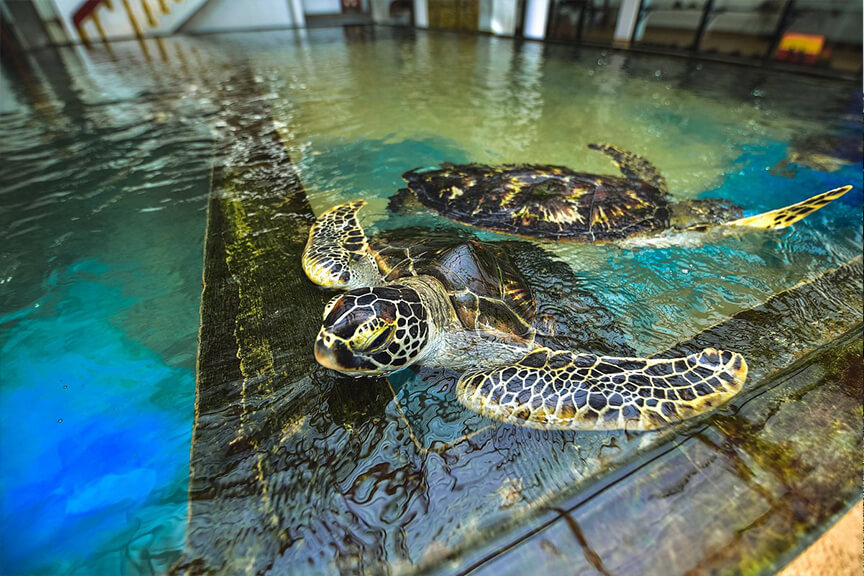

Bentota Turtle Hatchery
The Bentota Turtle Hatchery Project is a popular attraction in Bentota for all travellers. The pristine golden shores that draws you to our island, also provides an enticing nesting ground for several endangered turtle species from the Olive Ridley to the Leatherback turtle. The project aims at conserving and protecting the eggs from predators and other dangers.

Quick Tips
- Opening Time:
- 9am to 6pm
- Entrance Fee:
- LKR 500
- Nesting Season:
- April to July
The Bentota Turtle Hatchery Project is a popular attraction in Bentota for all travellers. The pristine golden shores that draws you to our island, also provides an enticing nesting ground for several endangered turtle species from the Olive Ridley to the Leatherback turtle. The project aims at conserving and protecting the eggs from predators and other dangers.
 
